Portal UI Actions, Part 2
3 October 2022
If you read the last Portal UI Actions post, I originally hard coded in the data to the server side JavaScript. Let’s extend this with a table, so that we can easily configure in new Portal UI Actions.
Creating a Table
Let’s start by setting up a table. If you remember, the parameters we wanted to provide for each action were:
// Set up each button's basic parameters.
// name: give it a single word name.
// label: This will be the button label and modal header.
// condition: The condition for the button to show up.
// text: The supporting text on the modal window.
// commentsVisible: Whether there should be an input comments window.
// commentsMandatory: Whether the comments window should be mandatory.
// execution: The function to execute when clicked on.
This should be relatively simple to port over to a table. I’ll go over the Execution script later.
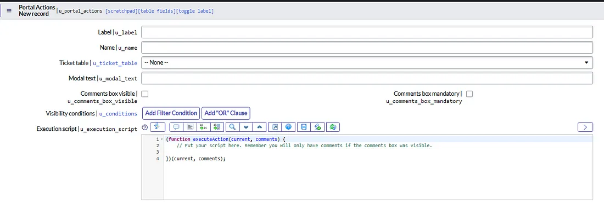
This is a visual reference for the form I set up for Portal UI Actions.
Some important things to note:
-
We have a Table Name field, called "u_ticket_table". We need this so that the Conditions field ("u_conditions") can refer to it.
-
We have a nice Script field called "u_execution_script" which will, sensibly, hold our execution script.
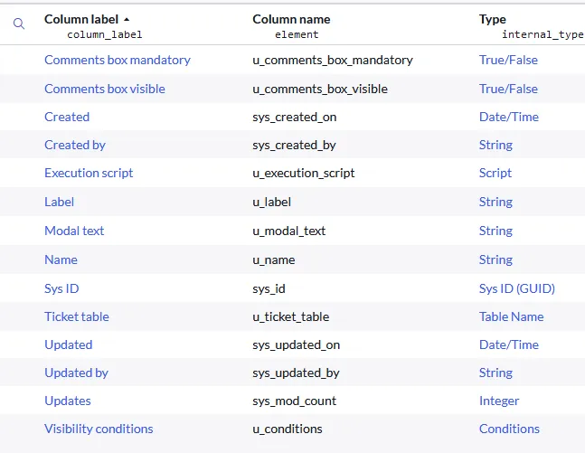
It’s now just a simple matter of ingesting these records via the server script.
Revisiting the Server Script
So at the top, where we have our preset values, let’s pre-set a new value called data.buttons to hold our buttons.
// Preset some modal form values related to the comments visibility.
// In some cases, we may not need a UI Action to have a comments box.
// Also preset data.buttons to hold buttons,
// and buttonValues to handle server-side actions later.
data.commentsVisible = false;
data.commentsMandatory = false;
data.buttons = [];
var buttonValues;
Now, the big one. Instead of our hardcoded data.buttons we set before, let’s query our new Portal UI Actions table! (I called it "u_portal_actions", for reference.)
// Query for portal buttons corresponding to this table
// For each found, evaluate the condition
// If it passes, add to the data.buttonsvar actionQuery = new GlideRecord(‘u_portal_actions’);
actionQuery.addQuery(‘u_ticket_table’,data.table);
actionQuery.query();while (actionQuery.next()) {
if (GlideFilter.checkRecord(gr, actionQuery.u_conditions.getValue())) {
var actionButton = {
name: actionQuery.u_name.getValue(),
label: actionQuery.u_label.getValue(),
condition: actionQuery.u_conditions.getValue(),
text: actionQuery.u_modal_text.getValue(),
commentsVisible: (actionQuery.u_comments_box_visible.getValue() == ‘1’),
commentsMandatory: (actionQuery.u_comments_box_mandatory.getValue() == ‘1’),
sysId: actionQuery.sys_id.getValue()
}; data.buttons.push(actionButton);
}
}
So this is pretty simple. We’re querying for everything on the Portal UI Actions table that matches the table our ticket is on. For each, if it passes the GlideFilter.checkRecord check, which tests a record (in our case, ours) against a query (in our case, the 'u_conditions' field), we set our actionButton object and push it into data.buttons. Simple!
Oh, and what’s going on with u_comments_box_visible and u_comments_box_mandatory? Well, true and false checkboxes provide 1s and 0s… as strings, as far as I can tell. So we can’t just ask if the values are true or false; they’ll always be true, even if they’re '0', because '0' is a string and therefore true.
Now that we’ve got our buttons, we can also amend that UI Actions visibility section. Last time, we were checking through the array for the conditions. We’ve already done that, though! Let’s just check the length of the data.buttons array.
// This section sets the entire visibility of the UI Actions panel,
// based on whether there were buttons added to data.buttonsif (data.buttons.length > 0) {
data.panelVisibility = true;
} else {
data.panelVisibility = false;
}
Finally, remember how last time we used that findButton function to find the correct execution data to execute? Well, we could technically do that again, but in this case I’m using GlideScopedEvaluator instead.
// Handle server-side actions after modal submission button.
// This works by finding the button execution script in the Portal UI Action record corresponding to the button clicked.if (input && input.action) {
var action = input.action;
buttonValues = findButton(data.buttons, ‘name’, action);var executeButton = new GlideRecord(‘u_portal_actions’);
executeButton.get(buttonValues.sysId);var evaluator = new GlideScopedEvaluator();
evaluator.putVariable(“current”, gr);
evaluator.putVariable(“comments”, input.comments.toString());
evaluator.evaluateScript(executeButton,’u_execution_script’);}
We’re finding that button again, but this time we’re getting its GlideRecord object once more (as 'executeButton'). We’re then putting that into GlideScopedEvaluator along with two variables: "current", which is our passed in ticket object, and "comments", which are the optional comments someone can use. These will be used in our Execution script, going back to that table we set up.
Adding an Execution Script to a Portal UI Actions Record
Most of the setup is relatively straightforward in other parts of the new table, so I’ll go over the Execution Script.
The big thing is that it’s taking both those variables so that you can use them in your object. Here’s the default text I put for that field.
(function executeAction(current, comments) {
// Put your script here. Remember you will only have comments if the comments box was visible.
})(current, comments);
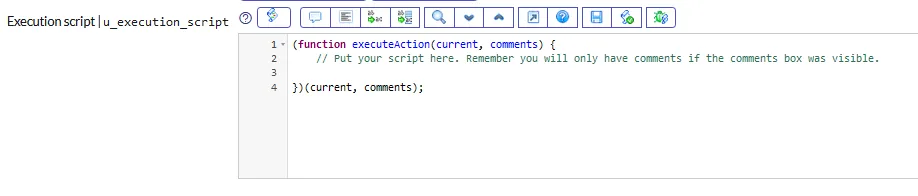
This makes it similar to a Business Rule, so developers with less understanding of JavaScript would still be able to use it. Here’s a really basic example: adding the comment to the ticket. (This is absolutely unnecessary, as there is already a method for doing this on the ticket page; it’s just a proof of concept.)
Please ignore the comment I have in the script because it’s from an older iteration :) We're not using gr anymore.
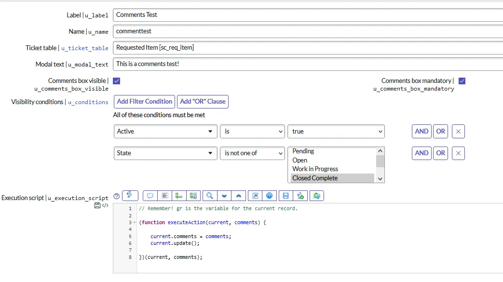
And for good measure, here’s all three buttons I’ve set up:
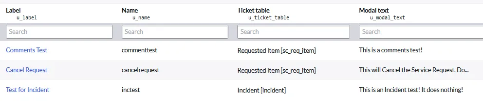
Putting it all together - Portal UI Actions in Use
Let’s look at this in action! I’ve opened up a new Request for an Acer Aspire NX. The Actions widget has shown up, and it’s shown me the two Actions that apply: Comments Test and Cancel Request.
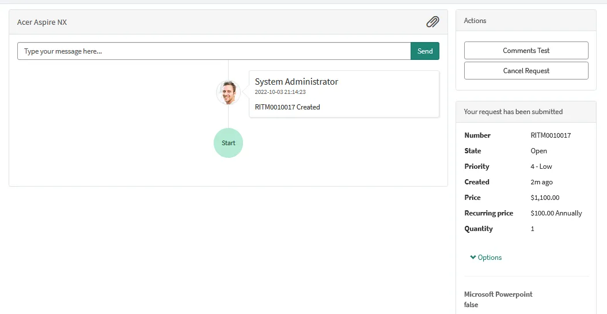
Let’s use the Comments Test first, just for fun. Clicking on it displays the modal window, with our mandatory text. Trying to Submit without filling it out shows a nice “Please fill out this field” message, since it’s mandatory.
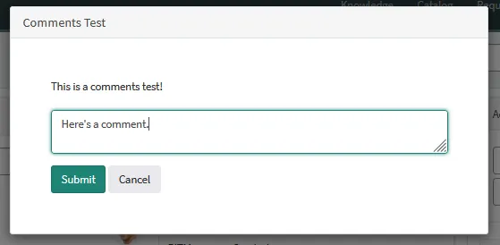
Submitting inputs the comment, as expected.
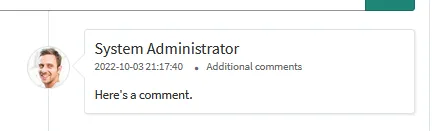
Cancel Request cancels the RITM and its parent REQ. (If you don’t have a Business Rule set up to cancel SCTASKs when a parent RITM is canceled, you might want to also make that part of your execution script.)
This one doesn’t have a comments box because I didn’t set that up in its record, but realistically you would probably want the end user to place a comment indicating the cancellation reason.
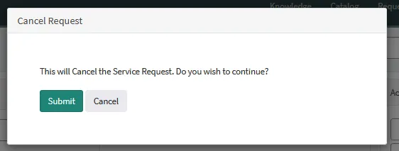
Submitting this cancels the RITM, as predicted. The Portal UI Actions widget also disappears, because now there are no buttons which satisfy the criteria of this ticket.
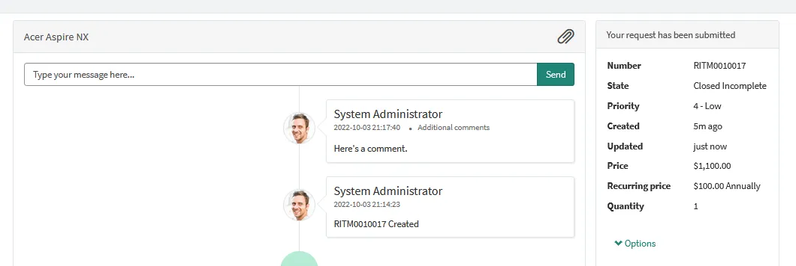
Just for fun, what was that last button I created? The Incident test?
It does nothing. It’s just an example to show how different buttons can appear on different ticket types.
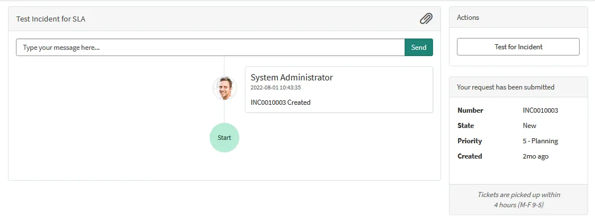
In Summary
While modern Portal design doesn't really necessitate the use of the Portal UI Actions widget anymore, the learnings taken from it can be used in other areas. It was pretty neat to learn how to use Filter Conditions and Execution Scripts in a custom table.